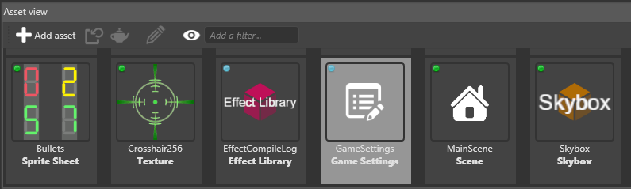
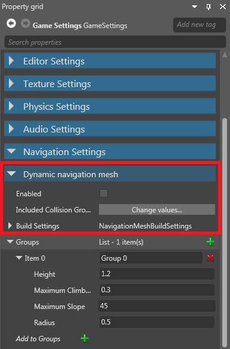
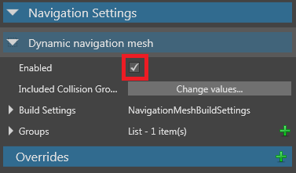

Dynamic navigation
Beginner Level designer Programmer
If you enable dynamic navigation, entities with navigation components don't need a navigation mesh asset. Instead, the entities generate navigation meshes dynamically.
Note
Make sure that the scenes you want the entities to navigate dynamically have navigation bounding boxes.
Enable dynamic navigation
You can enable and disable dynamic navigation in the global game settings asset.
On the entities you want to navigate dynamically, under the navigation component properties, next to Navigation mesh, make sure no navigation mesh is selected.

For more information about the navigation component, see Navigation components.
In the Solution Explorer (the bottom-left pane by default), select the Assets folder.

In the Asset View (the bottom pane by default), select the Game Settings asset.

In the Property Grid (the right-hand pane by default), under Navigation Settings, expand Dynamic navigation mesh.

Select the Enable dynamic navigation checkbox.

Dynamic navigation mesh properties
| Property | Description |
|---|---|
| Enabled | Enable dynamic navigation on navigation components that have no assigned navigation mesh |
| Included collision groups | The collision groups dynamically-generated navigation meshes use. By default, meshes use all collision groups |
| Build settings | Advanced settings for dynamically-generated navigation meshes |
Enable and disable dynamic navigation from a script
Example code:
// Find and enable the dynamic navigation mesh system
dynamicNavigationMeshSystem = Game.GameSystems.OfType<DynamicNavigationMeshSystem>().FirstOrDefault();
dynamicNavigationMeshSystem.Enabled = true;
// This stops the dynamic navigation mesh system from automatically rebuilding in the folowing cases:
// - loading/Unloading scenes
// - adding/removing static collider components
// - adding/removing navigation mesh bounding boxes
dynamicNavigationMeshSystem.AutomaticRebuild = false;
// ...
if (/* any condition that should cause the navigation mesh to update (eg open/close door) */)
{
// Start an asynchronous rebuild of the navigation mesh
var rebuildTask = dynamicNavigationMeshSystem.Rebuild();
rebuildTask.ContinueWith((x) =>
{
if (x.Result.Success)
{
// The navigation mesh is successfully rebuilt
}
});
}